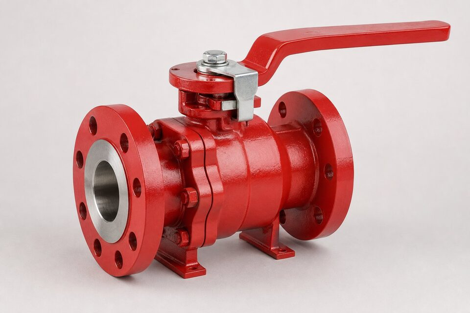

چرا تست آتش اهمیت دارد؟
در صنایع هیدروکربنی، حریق یکی از محتملترین سناریوهای حادثه است. در چنین شرایطی، شیرهای با نشیمنگاه نرم، اولین نقطه ضعفاند: مواد پلیمری نشیمنگاه در آتش میسوزند و مسیر نشتی باز میشود. اگر این نشتی کنترلنشده باشد، سیال قابل اشتعال به حریق تزریق شده و حادثه بزرگتر میشود. تست آتش تضمین میکند که شیر حتی پس از سوختن نشیمنگاه نرم، نشتی محدودی دارد و اپراتور فرصت ایزوله کردن خط را پیدا میکند. به همین دلیل، در مشخصه بسیاری از پروژهها، فایرسیف بودن الزامی است.

روش انجام تست
در تست، شیر در وضعیت نیمهباز درون کوره قرار میگیرد و تحت شعلهای با دمای مشخص برای مدت معین قرار میگیرد؛ همزمان فشار داخلی حفظ میشود. پس از این مرحله، شیر بسته شده و نشتی بدنه و نشیمنگاه در حین ادامه آتش اندازهگیری میشود. سپس شیر خنک شده و نشتی پس از خنک شدن نیز با معیارهای جداگانه سنجیده میشود. نتایج باید از حدود جدول مرجع کمتر باشند تا گواهی صادر شود. این تست روی نمونهای از یک خانواده طراحی انجام میشود و گواهی آن برای همان خانواده معتبر است.
خلاصه مراحل و معیارها
| مرحله | شرایط | معیار |
|---|---|---|
| آمادهسازی | شیر نیمهباز، فشار تست حفظ شود | نشتی اولیه صفر |
| اعمال شعله | دمای بالا برای مدت مشخص | پایداری بدنه |
| بستن و تست حین آتش | بستن شیر و اندازهگیری نشتی | کمتر از حد جدول |
| خنکسازی و تست نهایی | شیر در دمای محیط | کمتر از حد جدول |
مقادیر دقیق حدود نشتی باید از جداول مرجع مربوطه استخراج شود.
محدوده و مراجع همخانواده
مراجع تست آتش بر اساس نوع شیر تقسیم شدهاند: مرجع اصلی برای شیرهای یکچهارمچرخش مانند توپی و پروانهای استفاده میشود و مرجع جداگانهای برای شیرهای دروازهای، کروی و زاویهای وجود دارد که ساختار متفاوتی دارند. در استعلام، باید مرجع متناسب با نوع شیر ذکر شود؛ چون گواهی تست مرجع اشتباه، قابل پذیرش نیست. همچنین در پروژههایی که مرجع بینالمللی دیگری در مشخصه آمده، تطابق یا عدم تطابق باید در جلسه روشنسازی فنی شفاف شود تا در تحویل اختلاف ایجاد نشود.
نکات استعلام و تحویل
در استعلام، ذکر سرویس قابل اشتعال، مرجع تست آتش مورد نیاز و گواهی در فهرست مدارک الزامی است. هنگام ارزیابی پیشنهادها، گواهی را با سایز و کلاس شیر سفارشی تطبیق دهید؛ پوشش نداشتن سایز سفارشی یعنی تست انجامنشده. در پروژههای بزرگ، برخی کارفرمایان حضور ناظر در تست را الزام میکنند که باید در زمانبندی لحاظ شود. توجه داشته باشید که فایرسیف بودن، جایگزین طراحی ایمن خط نیست؛ بلکه لایه حفاظتی اضافی در سناریوی حریق است.
جمعبندی
تست آتش تضمین میکند شیر در بدترین سناریو، نشتی کنترلشدهای دارد و از تغذیه حریق جلوگیری میکند. با ذکر مرجع متناسب نوع شیر، درخواست گواهی معتبر و تطبیق آن با سایز و کلاس سفارشی، خرید فایرسیف به یک فرایند شفاف و قابل دفاع تبدیل میشود.
سوالات رایج
تست آتش شیر چیست؟
شیر در وضعیت نیمهباز تحت شعله با دمای بالا قرار میگیرد، سپس بسته شده و نشتی آن در حین آتش و پس از خنک شدن اندازهگیری میشود تا از حدود مجاز کمتر باشد.
چرا این تست لازم است؟
در حریق، نشیمنگاههای نرم میسوزند. طراحی فایرسیف تضمین میکند پس از آن، نشیمنگاه فلزی پشتیبان، نشتی را در حد قابل قبول نگه دارد و از تشدید حادثه جلوگیری کند.
کدام شیرها به تست آتش نیاز دارند؟
شیرهایی که در سرویسهای قابل اشتعال در نقاطی با الزام ایمنی حریق نصب میشوند؛ مانند خطوط هیدروکربنی در پالایشگاهها و ترمینالها.
آیا گواهی تست آتش یکبار مصرف است؟
خیر؛ گواهی برای یک خانواده طراحی مشخص صادر میشود. تغییرات اساسی در طراحی یا متریال، نیاز به تست مجدد دارد.
مطالب مرتبط
- راهنمای جامع شیر توپی (بال ولو)
- متریال نشیمنگاه شیرآلات
- راهنمای تست و معیارهای نشتی شیرآلات
- استاندارد شیرهای خط انتقال (API 6D)
با ذکر سایز، کلاس و سرویس، شیر با طراحی فایرسیف و گواهی تست آتش معتبر عرضه میشود.
مشاهده صفحه محصول ← ثبت RFQ همین محصولتامین این تجهیزات را به پیشرو تجهیز فرتاک بسپارید
شرکت پیشرو تجهیز فرتاک تامینکننده تخصصی تجهیزات صنعتی برای پروژههای نفت، گاز، پتروشیمی، فولاد و نیروگاهی است. برای دریافت پیشنهاد فنی و قیمت، استعلام (RFQ) خود را ثبت کنید تا کارشناسان مهندسی فروش در کوتاهترین زمان پاسخ دهند.
- تامین شیرآلات صنعتیخانواده کامل شیر با گواهی مواد و تست
- تامین تجهیزات صنایع نفت و گازپکیج مواد مطابق وندورلیست